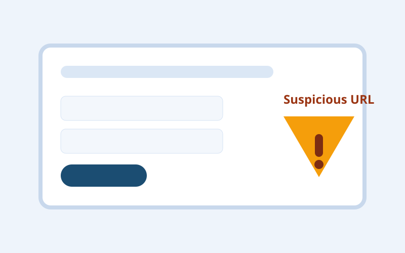

In plain words
Phishing Pages That Look Real explained simply: what it looks like, the warning signs, and the safest next step if it happens to you.
What this is
A phishing page is a fake website designed to look like a trusted login portal. The goal is to collect your username, password, and often one-time codes.
How it works
- You get a message saying your account needs urgent verification.
- The link opens a convincing copy of a real brand login screen.
- You enter login details and sometimes an MFA code.
- Attackers use those details immediately on the real service.
Why people fall for it
- Visual design can be copied in minutes.
- Urgency messaging suppresses normal caution.
- Even technical users can miss subtle URL differences when distracted.
Warning signs
- Domain spelling is close but not exact.
- The message asks you to act "within minutes".
- The page has odd grammar, spacing, or inconsistent branding.
- You are asked for backup codes or multiple factors at once.
Example scenario
An email warns that your mailbox will be suspended. You click and sign in on a nearly identical page. Moments later, your real inbox password is changed from another location.
What to do if it happens
- Reset the account password from the official app or bookmarked site.
- Revoke active sessions and unknown devices.
- Rotate recovery email and phone details if changed.
- Notify contacts if your account may have sent malicious messages.
How to reduce risk next time
- Open sensitive services from bookmarks, not message links.
- Use passkeys or strong MFA where available.
- Enable sign-in alerts for new device activity.
Quick reminder: You do not need proof that something is fake before you pause. One credible red flag is enough to stop and verify.